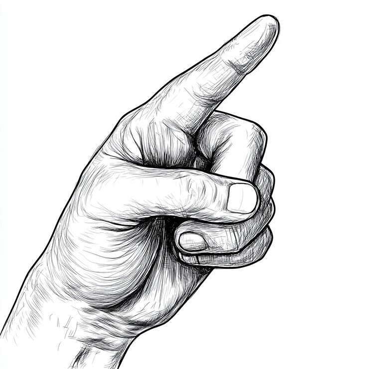
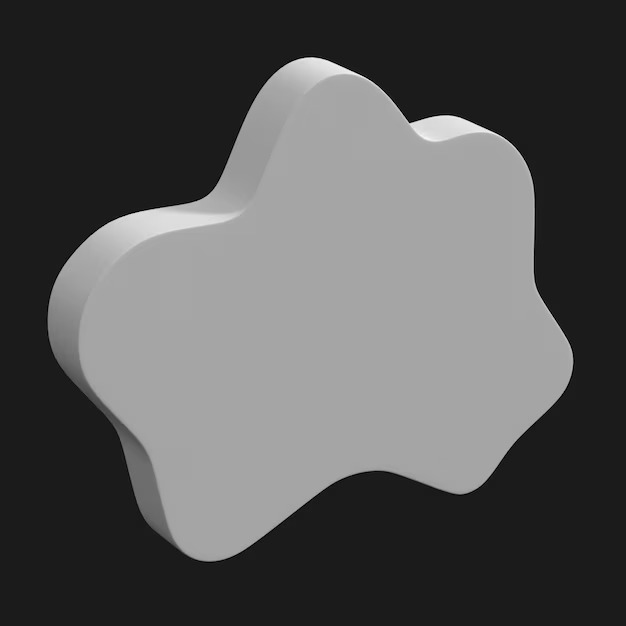

VIRTUAL
NOTEPAD
Draw in the air using hand gestures.
Your webcam becomes a digital canvas where ideas turn into floating 3D creations.
No installation. Just open the browser and start creating.
Gesture Drawing
Use your index finger to draw shapes directly in the air. Real time hand tracking detects your movements and converts them into smooth strokes on the canvas.

Real Time 3D Canvas
Your drawings are transformed into soft balloon like 3D objects that float inside an interactive scene. Rotate, grab, and interact with your creations naturally.

Privacy First
Your camera is used only for gesture detection. All processing happens locally in your browser. No video is stored and no personal data is collected.

The Ecosystem
CORE FEATURES
Gesture Based Drawing
Draw shapes by pointing your index finger toward the camera.
Real Time Hand Tracking
Powered by MediaPipe for fast and accurate gesture recognition.
3D Balloon Objects
Completed drawings inflate into soft 3D shapes that float in the scene.
Interactive Objects
Grab, rotate, and move objects using natural hand gestures.
Color Palette
Choose different colors before drawing to create unique designs.
Multiplayer Canvas
Share the canvas with others and collaborate in real time using WebRTC.
FUTURE OF CREATIVE INTERFACES
Ready to turn your hand movements into digital creations?